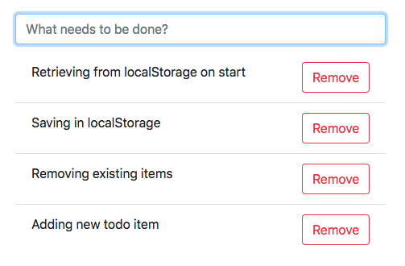
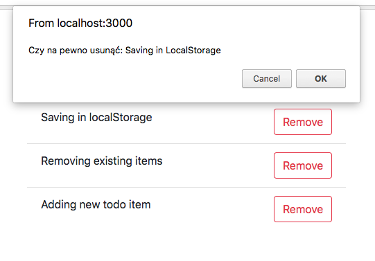

Assingment 6:
Zrobić listę zadań do wykonania (todo app) zapisywaną w localStorage.
Co powinno zostać zrobione:
- Możliwość dodania nowych zadań do zrobienia
- Usuwanie istniejących zadań
- Komunikat (czy na pewno usunąć) w trakcie usuwania
- Zapisywanie w localStorage
- Dane powinny być pobrane i wyświetlone z localStorage po uruchomieniu aplikacji
Aplikacja powinna wyglądać tak jak na załączonych obrazkach:


Do komunikatu przed usunięciem można użyć funkcje confirm